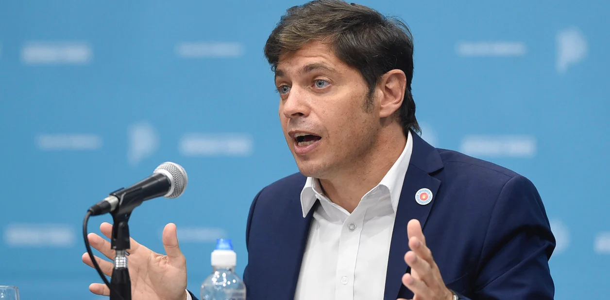
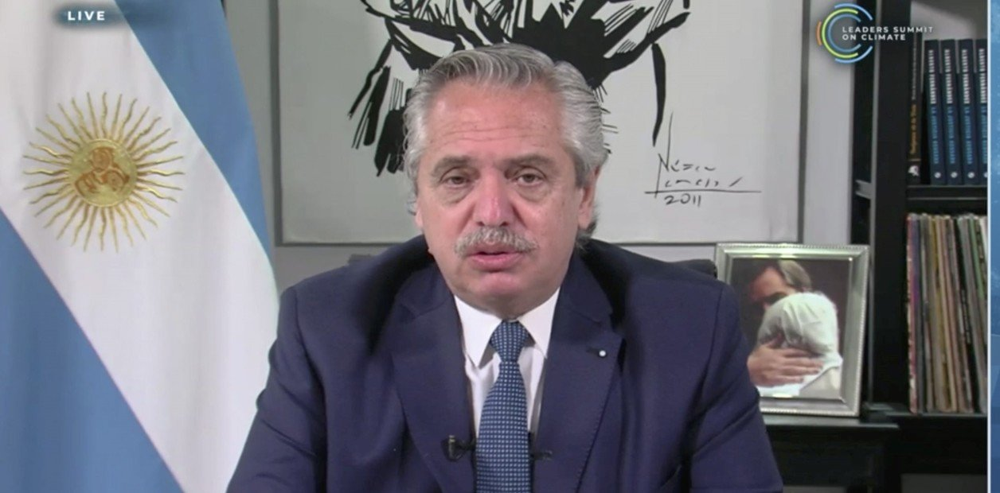
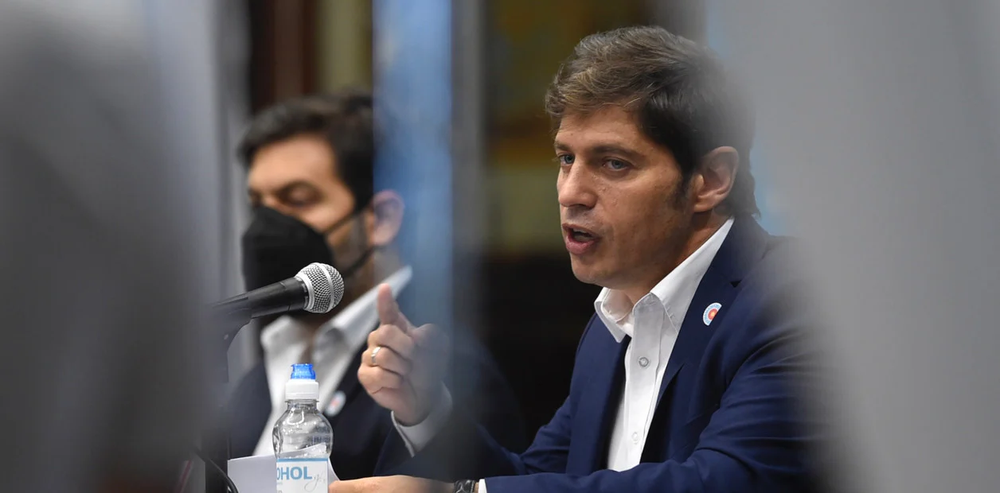

Politica
Para Axel Kicillof, el fallo que habilitó las clases presenciales
en la
Ciudad “es repugnante”.
El gobernador bonaerense avaló las nuevas restricciones por el coronavirus.
En la Cumbre Climática, Alberto Fernández
volvió a hablar de la deuda e
hizo un pedido a los líderes mundiales
El jefe de Estado reclamó flexibilización de plazos, tasas y condiciones.
Axel Kicillof suspendió las clases presenciales en cuatro municipios
del
interior bonaerense
La medida regirá por 14 días a partir del 26 de abril en Bolívar, Castelli, General Villegas y Zarate.
